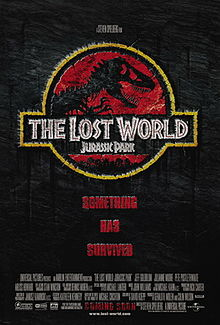
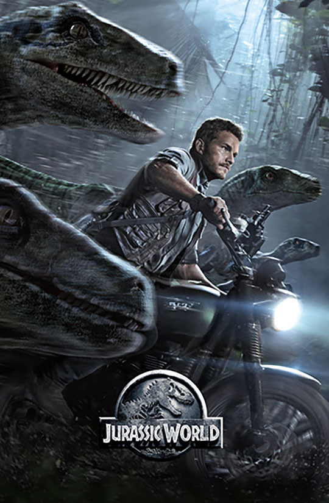
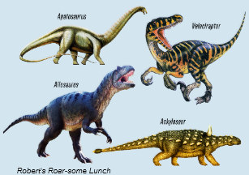

Jurassic World is a 2015 American science fiction adventure film, the fourth installment of the Jurassic Park film series, and the first film in the Jurassic World franchise. It was directed by Colin Trevorrow, written by Derek Connolly and Trevorrow, produced by Frank Marshall and Patrick Crowley, and stars Chris Pratt, Bryce Dallas Howard, Vincent D'Onofrio, Ty Simpkins, Nick Robinson, Omar Sy, BD Wong, and Irrfan Khan.
Set 22 years after the events of Jurassic Park, Jurassic World takes place on the same fictional Central American island of Isla Nublar, which is located off the Pacific coast of Costa Rica, where a theme park of cloned dinosaurs has operated for nearly a decade. The park plunges into chaos when a genetically-engineered dinosaur escapes from its enclosure and goes on a rampage.
Universal Pictures intended to begin production of a fourth Jurassic Park film in 2004 for a mid-2005 release but development stalled while the script underwent several revisions. Following a suggestion from executive producer Steven Spielberg, writers Rick Jaffa and Amanda Silver explored the idea of a functional dinosaur park. Once Trevorrow was hired as director in 2013, he followed the same idea while developing a new script with Derek Connolly. Filming lasted from April to August 2014 in Louisiana and Hawaii. The dinosaurs were created by Industrial Light & Magic using CGI and by Legacy Effects using life-sized animatronics.
The Lost World: Jurassic Park is a 1997 American science fiction adventure film and the second installment in the Jurassic Park film series. A sequel to 1993's Jurassic Park and loosely based on Michael Crichton's 1995 novel The Lost World, the film was directed by Steven Spielberg and written by David Koepp. The film stars Jeff Goldblum, returning as the chaos-theorist and eccentric mathematician Ian Malcolm, Julianne Moore, Pete Postlethwaite, Vince Vaughn, Vanessa Lee Chester, and Arliss Howard. Taking place four years after the events of the original film, John Hammond (Richard Attenborough) sends a team, led by Malcolm, to Isla Sorna, the second island InGen used to make the dinosaurs, to study the animals while coming into conflict with a team led by InGen to bring some of the dinosaurs back onto homeland.
After the original book's release and the first film's success,fans pressured Crichton for a sequel to his novel Jurassic Park. Following the book's publication in 1995, production began on a film sequel. Filming took place from September to December 1996, primarily in California, with a shoot in Kauai, Hawaii, where the first film was shot. The Lost World's plot and imagery is substantially darker than Jurassic Park. It makes more extensive use of computer-generated imagery to depict the dinosaurs, along with life-sized animatronics.
Released on May 23, 1997, the film received mixed reviews from critics, who praised the visuals and action sequences, but criticized the writing and character development. The film was a box office success, grossing over $618 million worldwide, becoming the second-highest-grossing film of 1997. It earned an Academy Award nomination for Best Visual Effects. A sequel, Jurassic Park III, was released on July 18, 2001.
A very famous poem related to dinosaurs is:
Released on May 23, 1997, the film received mixed reviews from critics, who praised the visuals and action sequences, but criticized the writing and character development. The film was a box office success, grossing over $618 million worldwide, becoming the first second-highest-grossing film of 1997. It earned an Academy Award nomination for Best Visual Effects. A sequel, Jurassic Park III, was released on July 18, 2001.
Dinosaur types: